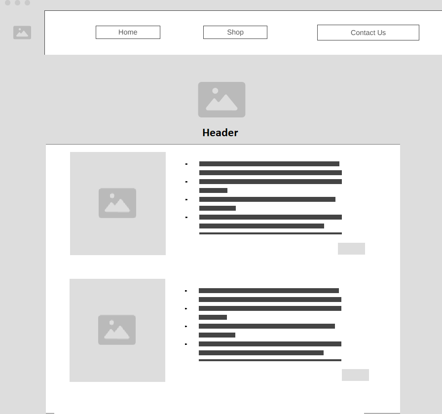

Overview
Purpose
The purpose of this site is to help me with the advertisement of a startup business that I have wanted to do for a while. I am going to be investing in a laser engraver and create a small business on Etsy and other media platforms to get the word out and obtain customers. I will be advertising wood engravings, metal engravings, custom and pre-made. This website will contain different types of work that I will be offering and prices.
Audience
Customers, Sports Teams, Couples, Families, Office Management
Dynamic elements
I will be making this very phone accessible so that customers can order straight from a phone and the site is clean on any device. The Menu will be collapsable on the phone and the menu button will dissapear on normal site view. I will be making a "Checkout Form for each Item that is listed so you can see how much it would cost etc to customize it and if you want a different quantity as well."
Branding
Website Logo
Style Guide
Color Palette
Palette URL: https://coolors.co/333333-4c2b2b-cd7f32-556b2f-d4af37| Primary | Secondary | Accent 1 | Accent 2 |
|---|---|---|---|
| [#333333] | [#4C2B2BF] | [#cd7f32] | [#556B2F] |
Typography
Heading Font: [IM Fell French Canon SC]
Paragraph Font: [Lato, Helvetica, sans-serif]
Normal paragraph example
Welcome to KarV - Laser Engraving, where precision meets artistry. At KarV, we specialize in high-quality laser engraving on a variety of materials, including wood and metal. Our state-of-the-art laser technology allows us to create intricate designs and personalized engravings that elevate the ordinary to extraordinary. Whether you're looking for unique custom gifts, bespoke business merchandise, or stunning decorative pieces, our expert craftsmanship ensures a product that stands out. Explore our portfolio and discover how KarV can bring your vision to life with precision and elegance.
Colored paragraph example
Welcome to KarV - Laser Engraving, where precision meets artistry. At KarV, we specialize in high-quality laser engraving on a variety of materials, including wood and metal. Our state-of-the-art laser technology allows us to create intricate designs and personalized engravings that elevate the ordinary to extraordinary. Whether you're looking for unique custom gifts, bespoke business merchandise, or stunning decorative pieces, our expert craftsmanship ensures a product that stands out. Explore our portfolio and discover how KarV can bring your vision to life with precision and elegance.
Navigation
Content
Home page
Welcome to KarV - Laser Engraving, where precision meets artistry. At KarV, we specialize in high-quality laser engraving on a variety of materials, including wood and metal. Our state-of-the-art laser technology allows us to create intricate designs and personalized engravings that elevate the ordinary to extraordinary. Whether you're looking for unique custom gifts, bespoke business merchandise, or stunning decorative pieces, our expert craftsmanship ensures a product that stands out. Explore our portfolio and discover how KarV can bring your vision to life with precision and elegance.KarV began as a dream shared by two friends, both 25 years old and based in Nampa, Idaho. While studying web development together, they often talked about starting a small business on the side. This dream quickly grew into a passion project as they discovered the joy of laser engraving. What started as a hobby turned into something they both fell in love with, combining their technical skills and creative visions. Today, KarV is the result of their dedication, creativity, and the strong bond between two friends. Every piece they create is a testament to their commitment to quality and artistry. At KarV, we pour our hearts into every project, bringing unique, personalized engravings to life.
Testimonials: I was honestly just scrolling through Instagram and saw this new company and decided that I would give them a shot, especially since my anniversary was coming up next month. I was incredibly impressed with the workmanship and quality of this work! Everything was smooth, no rough edges, they got all of the custom names right, and my wife is absolutely in love with it. 10/10 Guys, good job! - David H
I recently purchased a custom engraved wooden plaque from KarV, and I couldn't be happier with the result. The craftsmanship is outstanding, and the attention to detail is incredible. It made the perfect gift for my friend's wedding. Highly recommend! - Sarah M.
I ordered a custom laser-engraved metal sign from KarV for my home office, and it exceeded all my expectations. The detail and precision of the engraving are fantastic, and it adds a really professional touch to my workspace. The customer service was excellent, and they made sure I was happy with every step of the process. I will definitely be returning for more custom items in the future!" - Emily R.

[Shopping Page]
Content: Prices, Locations, Availability, Custom Able (yes/no), colors
Elegant Design: The notebook features a beautifully embossed Celtic knot design, symbolizing eternity and interconnectedness, adding a touch of sophistication to your stationery collection.
Premium Quality: Crafted from high-grade leather, this set promises longevity and a rich, tactile experience that only improves with age.
Versatile Accessories: The set includes a leather cover for your notebook, a pen holder, and additional pouches, ensuring all your writing essentials are stylishly organized.
Elastic Closure: The notebook comes with a sturdy elastic band to keep your notes secure, making it perfect for travel and everyday use.
Elegant Design: The key chain features a sleek and stylish design that complements any set of keys.
Premium Quality Leather: Made from high-grade leather, ensuring durability and a luxurious feel.
Durable Metal Ring: Equipped with a sturdy metal ring to securely hold your keys.
Compact and Functional: Designed for easy carrying and practical use.
Intricate Engraved Design: Features beautiful engravings that add a personal touch.<
High-Quality Wood: Made from premium wood, ensuring durability and elegance.<
Elegant and Rustic: Combines rustic charm with sophisticated design.<
Perfect for Gifting: An ideal gift for weddings, anniversaries, or special occasions.
>High-Quality Stainless Steel: Ensures durability and a sleek appearance.
Insulated: Keeps beverages cold or hot for extended periods.
Sleek and Modern Design: Combines functionality with a stylish look.
Durable and Long-Lasting: Built to withstand daily use.

Wireframes
Create two wireframes for your site. One for each page and list them here
Home
Drop down for Celular Devices (Menu). Testimonials Changed For Celular Devices Grid Changed for Celular Devices
[Shop]
Clicking on an image will bring up a little form to insert quantity, and customizability.
